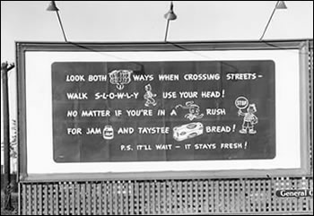

CATHERINE GUDIS, BUYWAYS: BILLBOARDS, AUTOMOBILES,
AND THE AMERICAN LANDSCAPE (New York: Routledge, 2004).  Catherine Gudis's Buyways: Billboards, Automobiles, and the American Landscape follows James Fraser's 1991 The American Billboard: 100 Years as one of the few histories devoted to the once omnipresent and surprisingly rich medium of the commercial billboard. Exhaustively researched, Buyways occurs at the intersection of such other popular scholarly works as Stephen Kern's The Culture of Time and Space 1880-1918 , Jackson Lears's Fables of Abundance: A Cultural History of Advertising in America , Roland Marchand's Advertising the American Dream: Making Way for Modernity, 1920-1940 , and Cecelia Tichi's Shifting Gears: Technology, Literature, Culture in Modernist America --all of which aim to further access what Raymond Williams would call the "structure of feeling" of a turn-of-the-century America consumed by issues of speed, mass production, efficiency, leisure, and expanding technology. Through the unexpectedly significant and dramatic portal of outdoor advertising--though perhaps "tollbooth" is a more appropriate image in this context--Gudis explores the larger culture of American mobility, the decentralization of the market, and emerging concerns over the stewardship of nature and the highway landscape. " Buyways ," Gudis writes, "is organized around the themes of production, distribution, and consumption" and begins with a reminder that the construction and use of billboards emerged from the competitive and sometimes violent practice of nineteenth century billposting that converted urban and rural landscape alike into one that was "slathered in paper and paste." The advent of the automobile, however, changed the dynamic of that slather as it forced advertisers to deal with newly "mobile audiences" while converting American highways into "corridors of consumption"--a market shift that would eventually have substantial impact on urban design, among other things. Billboard execs discovered that their traditional text-heavy messages couldn't contend with the potholes, shifting gears, and scenic landscapes that vied for the speedy reader's attention, and so, Gudis argues, billboard advertising gradually began to feature "more simplified, abstract, and streamlined means of representing and selling the lessons of mobility." Hence the birth of logos and single images, "messages yielding unblinking recognition," and even forays into modern art forms and designs, to develop a medium that wouldn't just "survive the inattentive gaze of viewers but rather thrive on the inattention of viewers." If Part One of Buyways can be read as the formal development of the billboard as genre, then Part Two looks past the board to the organization of the outdoor advertising industry--its professional affiliations, implementation of industry standards, attempts at self-regulation, etc.--and, even more importantly, to how the industry "developed an architecture of mobility expressly suited to the decentralizing commercial arena" in the U.S. These billboards construed travelers as twentieth-century flaneurs taking in the world from "the private space of their cars" and attempted to direct them how, when, and where to consume while helping to culturally "zone" the strip and its parking lots, grocery stores, gas stations, etc. In "fostering" what Gudis says is "our present sense of placelessness and the meandering of the market beyond geographic boundaries," these billboards took on increasingly elaborate tasks, with some even including theatrical stages and "showroom" windows on and behind which real people demonstrated the products being advertised around them. Not only did billboards sell individual products, Gudis argues, but by including electricity, clocks, on-site car dealerships and parking lots, they helped to construct and sell an entire culture of mobility and technology as well. As billboard culture threatened to become as chaotic and competitive as the bill posting industry out of which it grew--editorial cartoons of the time show drivers walled-out from the landscape by billboards placed end-to-end along highways--public sentiment began to turn sour. Part Three of Buyways chronicles the "scenic sisters" and other largely women-led attempts to lobby for reforms aimed at restricting "billboard barons" and the "visual pollution" (elsewhere called "landscape leprosy" and "billboard rash") obstructing the driver's experience of nature and the landscape. In demonstrating how these women attempted to extend aesthetic control over the domestic realm into a cluttered and unsightly public sphere, Gudis makes some of her more original and insightful contributions, especially in "The Pastoral View" which examines how reformers "cast the highway, like the department store and picture palace, as another site of mass consumption, and the panorama of nature was the commodity for sale." Far from preserving the landscape, these efforts sought "to produce a good picture according to very specific cultural and aesthetic principles." _____________
|